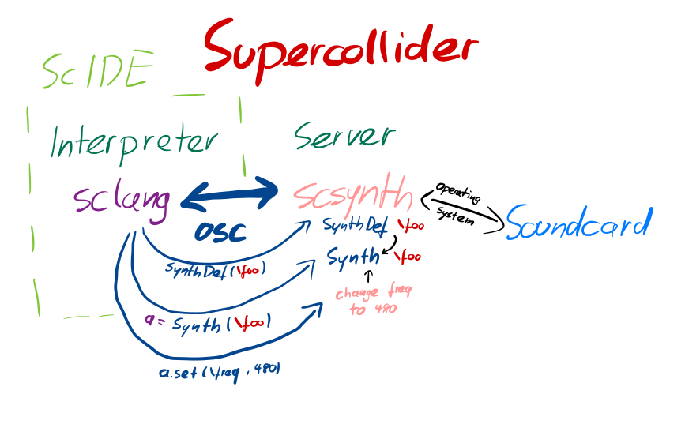
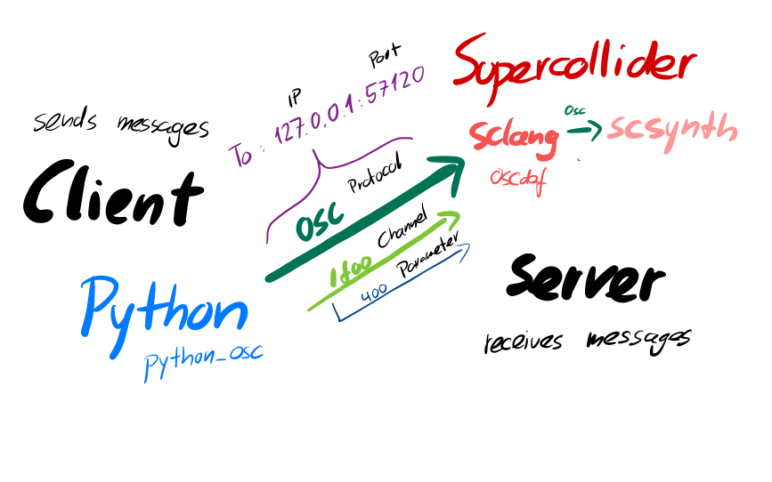
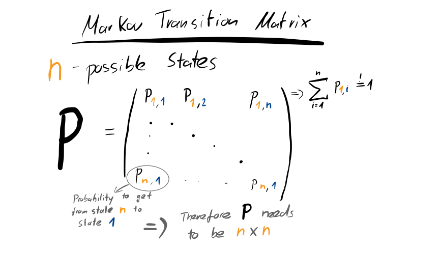
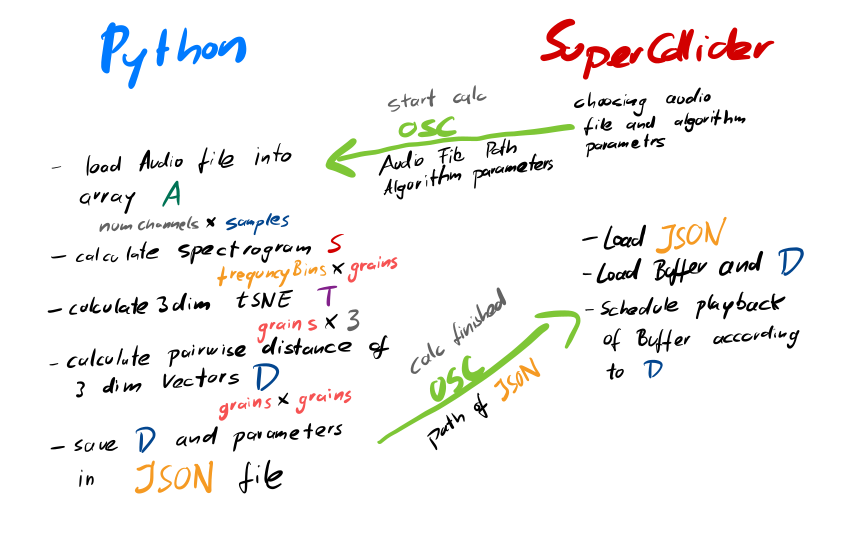

Communicating between SuperCollider and Python¶
One may ask the question why there are so many different programming languages in the first place is valid. One of the reasons is that certain programming languages follow ceration aproaches that fit certain domain specific needs.
The programming language sclang of SuperCollider platform is an interpreted language which means each instruction gets dynamically evaluated. Of course there is the question how sclang itself has been written which is C++, a compiled language. Basically compiled languages have the advantage of being fast where interpreted languages allow for a more dynamic aproach which comes handy during live situations but are therefore slower.
As audio processing is time critical (see real time computing) we need a fast language (C++) to generate the audio signal but we want also a language on a more abstract level to control the audio generation and not care about e.g. memory allocation, which sclang delivers. A different aproach is used by e.g. openFrameworks in which one programs directly in C++ but openFrameworks delivers convenience function for often used tasks - this aproach is often called a library or framework and is not a new programming language like sclang.
As sclang itself is not fast enough to generate audio signals we need to send send control commands to the audio generating server scsynth which is written in C++. In order to communicate between both entities sclang and scsynth uses OSC (Open Sounc Control) which defines a protocol to send data between both entities.

As we now have lurked into the topic of the motivation behind the multitude of programming languages we now introduce a new programming language Python. The first paragraph of the Wikipedia article about Python says
Python is an interpreted high-level general-purpose programming language. Python’s design philosophy emphasizes code readability with its notable use of significant indentation. Its language constructs as well as its object-oriented approach aim to help programmers write clear, logical code for small and large-scale projects.
Sounds great, but as it is an interpreted language it is still not fast enough for audio generation like scsynth and as it is not designed specifically to control audio synthesis like sclang but nonetheless it has the advantage that a lot of people adapt a variety of applications and libraries for Python. In particular Python gained popularity within the last years as it is the de-facto standard for data analysis as lots Data Science and Machine Learning applications rely on the simplicity and readability of Python. We could implement these algorithms in sclang as both languages are turing complete but this is a big task as these algorithms can be tricky to implement properly so we need to find a way to communicate between both languages what this chapter is about.
%%html
<iframe width="560" height="315" src="https://www.youtube-nocookie.com/embed/RPQD7-AOjMI" title="YouTube video player" frameborder="0" allow="accelerometer; autoplay; clipboard-write; encrypted-media; gyroscope; picture-in-picture" allowfullscreen></iframe>
OSC¶
A message is send from a sender to a receiver - so when we want to implement a messanging system between SuperCollider and Python using OSC we need to consider who is the sender (the client) and who is the receiver (the server).
But before we can start building the messanging infrastructure we need to teach Python the OSC protocol. By doing some research we find the Python library python-osc which implements the OSC protocol for Python so we do not need to take care of this. Now it comes down to reading documentation.
From Python to SuperCollider¶
We start by sending an OSC message from Python to SuperCollider which controls the frequency of a synth. It is good practice to set up the receiver first before sending a message from the client so we focus on the SuperCollider part first.

SuperCollider¶
We start by booting the scsynth server
s.boot;
and adding a SynthDef to it
SynthDef(\foo, {|out|
var sig = Saw.ar(freq: \freq.kr(200));
var env = EnvGen.kr(Env.linen(
sustainTime: 0.2,
releaseTime: 0.2,
), doneAction: Done.freeSelf);
Out.ar(out, sig*env*\amp.kr(0.2)!2);
}).add;
and testing it
Synth(\foo, [\freq, 400]);
Now it is time to take a look at the documentation of the OSC communication in SuperCollider.
A good starting point is to verify the port of the sclang instance by executing
NetAddr.langPort;
-> 57120
This port can change if the port is already taken by e.g. another sclang instance so it is good practice to verify this port as it will be important when writing the Python section.
We can use OSCdef to register a function which will be called when we receive an OSC message on a path which is like a sub-URL.
A parameter of the function we need to provide is the actually received message - we call this kind of function a callback function which are often used with an event loop like in JavaScript.
OSCdef(key: \myOscDef, func: {|msg|
# msg[0] is the path that the message was received on
Synth(\foo, [\freq, msg[1]]);
}, path: "/my_path");
We have now setup a SuperCollider server which listens on OSC messages on channel /my_path and expects a frequency value in this message which will be used to play our synth.
Python¶
Taking a look at the documentation of python-osc we find an example which implements an OSC client so we only need to adjust the code for our needs.
As always we need to import the libraries we want to use before we can use them. If this part fails check that you have installed all necesarry dependencies - see Installing dependencies.
import time
import numpy as np
from pythonosc import udp_client
np.random.seed(42)
Now we need to specify the address of the OSC server which we want to send our message to.
The IP address 127.0.0.1 is our own machine (also often called localhost) and we identified the port via NetAddr.langPort; before.
osc_client = udp_client.SimpleUDPClient(address='127.0.0.1', port=57120)
Now we simply send a message from Python to OSC on channel /my_path.
If everything worked correctly we should hear a sound from SuperCollider.
for i in range(10):
osc_client.send_message("/my_path", np.random.randint(100, 1000))
time.sleep(0.2)
Debugging communication¶
If no sound was played there are some steps that can help you to find the issue.
Check ports and adresses twice! Prefer copy & pasting over typing as transposed digits (“Zahlendreher”) are notorious for wasting precios lifetime
Do not miss the slash in the osc path: For SuperCollider and for Python
Use
OSCFunc.trace(false, true);in SuperCollider to dump all incoming OSC messages. If you do not receive any kind of messages here there is something wrong with the addresses.
From SuperCollider to Python¶
After we have seen how to send messages from Python to SuperCollider we want to take a look at how we can send messages from SuperCollider to Python.
Before we start by setting up a OSC server in Python we want to discuss two things: Error handling and freeing resources.
Error handling in Python¶
SuperCollider has a different philosophy of error handling than most commonly used programming languages such as Python which are a bit stricter on errors. This does not mean that SuperCollider will simply follow blindly everything without giving us feedback if something failed but it will often try to fix something instead of throwing an error.
This strictness seems maybe annoying at first but when working with databases or files this strictness of error handling is useful - imagine if we want to copy files from location A to location B and delete them afterwards but while copying we run out of space. This would be a good time to stop the program with an error instead of continuing with the deletion of the files in location A and this is where exceptions come into play.
A good example of this is the division by zero which is undefined an not infinity and can lead to real life consequences
1/0
-> inf
Compare this to Python
1/0
---------------------------------------------------------------------------
ZeroDivisionError Traceback (most recent call last)
<ipython-input-5-9e1622b385b6> in <module>
----> 1 1/0
ZeroDivisionError: division by zero
which yields on exception and therefore stops the execution our program. This does not mean that anytime we want to divide by 0 our Python program will stop, we just have catch this exception and explicitly tell Python what to do in this case.
def safe_division(x):
try:
return 1/x
except ZeroDivisionError:
print("Do not divide by zero")
return 0
safe_division(0)
Do not divide by zero
0
SuperCollider has also an Exception class but as seen above is not as used as much.
The motivation on the more relaxed (or implicit) error handling of SuperCollider is to not stop the audio output on ambigious inputs during live coding - one discipline where Python is not often used for.
Freeing resources¶
Coming from SuperCollide one is familiar with the Done class which adds the posibilty to free a synth based on certain occasions (e.g. by reaching the end of an amplitude envelope).
Although on high level languages like Python or sclang we do not have to care so much about allocation and freeing of resources like in more low level languages like C++ (which is one of the reasons it is so fast) it is still necessary to think about this on a higher level.
We only have limited resources on a computer and need to clean up unused resources like silent synths that will never generate any sounds anymore - this gets even more relevant the more these resources are limited.
A really limited resource are ports on a computer - only one application can serve a port and if this port is already in use we can not use this port for our application. As a server needs to listen on a port it is best practice to also tell the operating system that we are not using the port anymore if we stop listening for messages with our server so this port can be re-used again later. We can combine this with our Exception handling discussed above which we will see in a minute.
When working with network or file resources (which are actually quiet similiar) it is best practice to clean up after oneself after the work is done.
It gets problematic if an error occures while we do some work because then our clean up routine will maybe not executed.
Python has a finally block for this which gets called if any exception occured or if everything worked as expected.
Setting up the OSC server in Python¶
Now we can start by setting up a OSC server in Python.
We start by setting up a dispatcher which simply tells Python what to do when a message on a certain path is received.
from pythonosc.dispatcher import Dispatcher
from datetime import datetime
dispatcher = Dispatcher()
# **kwargs collects any arguments we forgot to set explicitly
def print_osc(address, message, **kwargs):
print("{time} - {message}".format(
time=datetime.now().strftime("%H:%M:%S.%f"),
message=message,
))
# we map the print_osc function as *handler* on path my_python_path
dispatcher.map(address="/my_python_path", handler=print_osc)
<pythonosc.dispatcher.Handler at 0x11040fe50>
After we set up the logic of how to respond to messages we can now bind this to a port and therefore acting as a server.
This will show a difference between sclang and Python: normally Python can only do one thing at once - so when Python is listening for messages we can not do something else in the meantime like in sclang.
Therefore we should discuss on how to stop the server - once started we can not do something else in Python!
In Jupyter Lab one can click on Interrupt Kernel in the Kernel tab or enter the shortcut i i - this wil trigger a keyboard interrupt which is normally triggered by hitting cmd/control c - but for now we want to keep the server running.
from pythonosc.osc_server import ThreadingOSCUDPServer
server = ThreadingOSCUDPServer(
# sclang is listening on port 57320 so we take 57310 for python
server_address=("127.0.0.1", 57310),
dispatcher=dispatcher
)
print(f"Start OSC server on port {server.server_address[-1]}")
try:
server.serve_forever()
except KeyboardInterrupt:
print(f"Shutdown Python server on port {server.server_address[-1]}")
finally:
# we tell the OS that we do not need any longer the port
server.server_close()
Start OSC server on port 57310
23:11:15.004284 - hello from supercollider
Shutdown Python server on port 57310
As the server is now running (indicated by * next to the code cell in Jupyter) we can send a message from SuperCollider to Python.
SuperCollider is built around OSC (but also quiet restricted to OSC) so we can easily set up a client and send a message.
// our python osc server is listening on port 57310
b = NetAddr("127.0.0.1", 57310)
b.sendMsg("/my_python_path", "hello from supercollider")
Once we run these lines in sclang we will see the message appear in Python. We can now close the server by running Interrup Kernel.
Calculating with Python from Supercollider via OSC¶
We have now seen the communication from Python -> SuperCollider and SuperCollider -> Python so now we want to build an example where both languages can communicate with each other, so SuperCollider <-> Python.
JSON¶
There are a variety of formats to exchange and store information. One of the most commonly used is JSON which found wide adaption because it mimics the data structure of JavaScript which is the only available programming language in browsers. In SuperCollider and Python the data structure of JSON is closely related to a dictionary, where under a key (traditionally a string) a value is stored which makes accessing data properties more easy than in an array. OSC on the other hand is more related to a list which lacks the mapping of its items because I need to know what the first, secound, … value actually represents and I can not change this order without modifying code.
Although OSC can also be stored as a file it is used most of the time in a network domain. JSON finds adaption in networking and in file storage and trades human-readability for performance by not relying on a binary encoding for its messages like OSC and instead using human readable string representations for its data, therefore we can take a look at an example JSON.
{
"key_a": "value",
"key_b": [1, 2, 3],
"key_c": {
"nested_key": 42.0
}
}
Nesting dictionaries and storing arrays are really handy and are not (well) supported by OSC. Another benefit is that we can store large data in JSON (multiple GBs are not uncommon but also not the best format for such endeavours) which gets difficult when relying on the OSC network protocol UDP.
As mentioned before the SuperCollider environment is built around OSC and although we can set up easily an OSC server and client in sclang it is not possible to set up a server or client which responds to something differently than OSC (keep in mind that quarks like API set up a server in another language and this server will transfer the data back to sclang via OSC).
This does not mean that we can not use JSON in SuperCollider but only through exchanging files by using parseYAMLFile (a bit misleading as this YAML is another format like JSON but the YAML parser can parse JSON and YAML - parseJSON was added in SC 3.11).
j = "example.json".parseYAMLFile;
j["key_b"];
-> [ 1, 2, 3 ]
As the benefit of JSON over OSC is that we can transfer nested arrays of arbitrary length we can come up with an example where we make use of this.
Markov chains¶
Before we implement our little example we need to re-visit markov chains.
A markov chain \(M\) of first order and \(n\) states is a stochastic process which relies only on the former state \(i\) to calculate the probabibilty of the next state \(j\). We can write every probability to get from state \(i\) to state \(j\) for every state \(n\) into a \(n \times n\) matrix \(P\) which we call a transition matrix.
One convention of stochastic processes is that all posibilities must sum up to \(1\), therefore the sum of each row of \(P\) must sum up to \(1\) (\(=100\%\)), so
for every row \(j \in {1, \dots n}\) of our matrix \(P\).

Using markov chains with tSNE¶
We can schedule the playback of buffer grains according to a Markov transition matrix \(P\) which stores the probabilities to get from grain \(i\) to grain \(j\). The question is what kind of probabilites we want to have for our matrix \(P\) but for this we can use some techniques like tSNE for which we need to rely on Python.
In Python we can calculate the matrix \(A\) of a buffer which stores the audio data as \(\# \text{channels} \times \# \text{samples}\) and of this matrix \(A\) we can calculate the spectogram \(S\) of size \(\# \text{frequency bins} \times \# \text{grains}\).
Instead of the usual dimensionality reduction on the time domain we want to reduce the number of frequency bins of \(S\) this time because we want to keep the number of grains so they are deterministic and we can schedule them easily. Via a 3-dimensional tSNE we obtain a matrix \(T\) of size \(\text{grains} \times 3\). This matrix \(T\) is not a quadratic matrix so we need to think of a way to turn this into a quadratic matrix of form \(\text{grains} \times \text{grains}\). For each grain we have a 3 dimensional reduction of its frequency bins which can be considered a 3 dimensional vector which can be considered a point. We can now calculate the distance of the 3 dimensional frequency point to all the other 3 dimensional point representation of each grain. By doing this for each grain we can convert \(T\) to a \(\# \text{grains} \times \# \text{grains}\) matrix \(D\) which we can use as a transition matrix \(P\) for a markov chain for the scheduling of grains by nomalizing the rows (which we will do in SC).
The workflow shown below illustrates the workflow for the communication between SuperCollider and Python.

Python¶
import librosa
from sklearn.manifold import TSNE
from scipy.spatial import distance_matrix
from pythonosc.udp_client import SimpleUDPClient
import os
import json
def calculate_markov(file_path: str, grain_size: int, hop_size: int, sc_port=57120, sc_path="/calc_finished"):
A, sr = librosa.load(file_path, sr=None, mono=True)
S = librosa.feature.melspectrogram(A, sr=sr, win_length=grain_size, hop_length=hop_size, n_fft=grain_size)
tsne = TSNE(n_components=3)
T = tsne.fit_transform(S.T)
D = distance_matrix(T, T)
# save into json
json_path = f"{os.path.splitext(file_path)[0]}.json"
j = {
"P": D.tolist(),
"grainSize": grain_size,
"hopSize": hop_size,
"audioPath": os.path.abspath(file_path)
}
with open(json_path, "w") as f:
json.dump(j, f)
# send OSC message
SimpleUDPClient(address='127.0.0.1', port=sc_port).send_message(
sc_path,
os.path.abspath(json_path),
)
from pythonosc.dispatcher import Dispatcher
from pythonosc.osc_server import ThreadingOSCUDPServer
def start_calc(address, *message):
print(f"Received new message for {message[0]}")
calculate_markov(*message)
dispatcher = Dispatcher()
dispatcher.map(address="/start_calc", handler=start_calc)
server = ThreadingOSCUDPServer(
server_address=("127.0.0.1", 57310),
dispatcher=dispatcher
)
print(f"Start OSC server on port {server.server_address[-1]}")
try:
server.serve_forever()
except KeyboardInterrupt:
print(f"Shutdown Python server on port {server.server_address[-1]}")
finally:
# we tell the OS that we do not need any longer the port
server.server_close()
Start OSC server on port 57310
Received new message for /Applications/SuperCollider.app/Contents/Resources/sounds/a11wlk01.wav
Shutdown Python server on port 57310
SuperColllider¶
Once we run the python server we can take a look at the SuperCollider code which is also included in markovPlayer.scd in the directory of this notebook.
// start server
s.boot;
// verify port
NetAddr.langPort
(
// python server is listening on port 57310
b = NetAddr("127.0.0.1", 57310);
// our function to send a message to python
~startCalc = {|audioPath, grainSize, hopSize|
b.sendMsg("/start_calc", audioPath, grainSize, hopSize);
};
// will store our shared data
q = ();
// empty matrix P
q[\P] = [[1]];
// default buffer
q[\buffer] = Buffer.read(s, Platform.resourceDir +/+ "sounds/a11wlk01.wav");
q[\grainSize] = 44100;
q[\hopSize] = 4000;
// our callback function in which we parse the results from python
OSCdef(\calcFinished, {|msg|
var json = msg[1].asString.parseYAMLFile;
q[\P] = json["P"].asFloat;
q[\buffer] = Buffer.read(s, json["audioPath"]);
q[\grainSize] = json["grainSize"].asFloat;
q[\hopSize] = json["hopSize"].asFloat;
"Switched out data".postln;
}, "/calc_finished");
// a synthdef which can play a section of a buffer
SynthDef(\bplaySection, {|out|
var bufNum = \bufnum.kr(0);
var start = \start.kr(0);
var env = EnvGen.kr(Env.linen(
attackTime: \attack.kr(0.001),
sustainTime: (\end.kr(1000)-start)/BufSampleRate.kr(bufNum),
releaseTime: \release.kr(0.001),
), doneAction: Done.freeSelf);
var sig = PlayBuf.ar(
numChannels: 2,
bufnum: bufNum,
rate: BufRateScale.kr(bufNum) * \rate.kr(1.0),
startPos: start,
);
sig = sig*env*\amp.kr(0.5);
Out.ar(out, sig);
}).add;
// a tdef which will playback the buffer according to our markov transition matrix P
Tdef(\playMarkov, {
var curState=0;
loop {
// calculate next state which aka the next grain
curState = (0..q[\P].shape[0]).wchoose(q[\P][curState].normalizeSum);
// playback
Synth(\bplaySection, [
\bufnum, q[\buffer].bufnum,
\start, curState*q[\hopSize],
\end, curState*q[\hopSize] + q[\grainSize],
\amp, 0.5,
\attack, 0.1,
]);
// by reducing the factor of our wait time
// the played back samples will overlap more
((q[\grainSize]/s.sampleRate)*0.5).wait;
};
}).play;
)
// now we can change parameters from within supercollider
(
~startCalc.(
// use absolute paths
// the examlp is mono and we build for stereo so we will get some problems
audioPath: Platform.resourceDir +/+ "sounds/a11wlk01.wav",
grainSize: 10000,
// pay attention when reducing hop size
// as the calculated data grows exponentially
// because we obtain more grains and for each
// grain we calulate the distance to all other
// grains
hopSize: 1000,
)
)